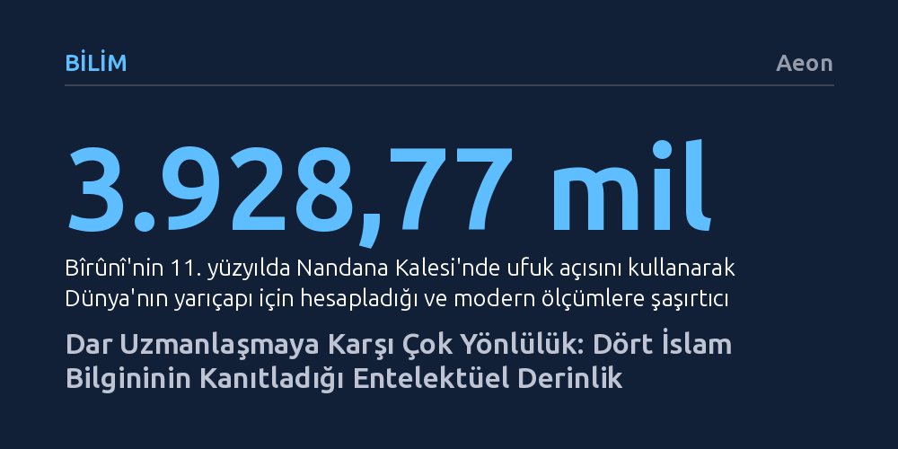

BILIM · Aeon · 2026-09-12
Kalıcı bilimsel atılımlar dar uzmanlaşmadan değil, disiplinler arasında serbestçe dolaşabilen çok yönlü zihinlerden doğar. Bîrûnî, İbnü'l-Heysem, İbn Sînâ ve Hârizmî'nin deneyimleri; kısıtlar ve krizler altında geniş bakış açısının uzmanlaşmaya üstün geldiğini kanıtlıyor.
Teknik ve dar uzmanlaşmanın tek başarı yolu sayıldığı bir çağda, asıl dönüştürücü yeniliklerin disiplinleri birleştiren ve kısıtları avantaja çeviren geniş bir entelektüel derinlikten kaynaklandığını gösterir.

Günümüz üniversite eğitimi, öğrencileri giderek daha dar bir mesleki çerçeveye ve kısa vadeli istihdam hedeflerine hapsediyor. Özellikle teknolojik kırılmaların ve yapay zekânın öne çıktığı günümüzde, gençlere yalnızca anlık iş piyasası becerileri aşılanırken geniş kapsamlı entelektüel merak fuzuli bir lüks gibi kenara itiliyor. Oysa bilim tarihinin en köklü ve kalıcı atılımları, tek bir uzmanlık alanının sınırlarına hapsolmayı reddeden bilginlerin elinden çıkmıştır.
İslam dünyasının altın çağında yetişen düşünürler için matematik, astronomi, tıp, felsefe ve şiir birbirine yabancı alanlar değildi. Aksine, bir disiplinin temel kabullerini bir diğerinin yöntemiyle sorgulamak olağan bir düşünme biçimiydi. Çok yönlü bilgi üretimi anlamına gelen polimati geleneği, Batı'dan ithal edilmiş yapay bir yaklaşım değil, bölgenin kendi entelektüel havzasında yeşermiş köklü bir tutumdu ve günümüzün parçalanmış dünyasında hem eğitime hem de kriz yönetimine güçlü bir alternatif sunuyor.
Pakistan gibi ülkelerde sınıflara adım atan öğrencilerin erken aşamada girişimcilik ve sektörel inovasyon jargonuyla donatılması, ancak bilginin derinliğinden ve genişliğinden yoksun bırakılması bu daralmanın en somut örneğidir. Bîrûnî, İbnü'l-Heysem, İbn Sînâ ve Hârizmî gibi dört büyük ismin yaşam öyküsü; geniş bir vizyona sahip olmanın yalnızca refah dönemlerine özgü bir ayrıcalık olmadığını, aksine kıtlık, esaret ve çalkantı koşullarında en büyük bilimsel sıçramaların anahtarı olduğunu ortaya koyuyor.
Büyük bilimsel keşiflerin yalnızca bol kaynaklı ve konforlu kurumlarda filizlenebileceği inancı tarihsel gerçeklerle uyuşmaz. Orta Asya'da imkânsızlıklar içinde yetişen Bîrûnî, kaynak kıtlığını elindeki bilgiyi en ince ayrıntısına kadar değerlendirme fırsatına dönüştürdü. Kendi ölçüm aletlerini yokluk içinde bizzat imal etmesi, dönemin önde gelen astronomlarının devasa sekstantlarındaki esneme kaynaklı yapısal hataları fark etmesini sağladı. Sultan Gazneli Mahmud'un sarayındaki zorunlu hizmeti sırasında yaptığı seyahatleri bile bir araştırma sahasına çeviren bilgin; Nandana Kalesi'nde ufuk alçalması açısını ölçerek Dünya'nın yarıçapını gerçeğe çok yakın biçimde hesapladı. Coğrafi gezileri sırasında yer kabuğundaki devinimi gözlemleyerek "Zamanın geçmesiyle deniz kuru toprağa, kuru toprak da denize dönüşür" tespitine ulaştı.
Benzer şekilde İbnü'l-Heysem'in optik devrimi, hareket kabiliyetinin tamamen yok edildiği on yıllık bir ev hapsinin meyvesidir. Nil Nehri'nin taşkınlarını önlemek amacıyla önerdiği baraj projesinin imkânsızlığını sahada anlayınca, öngörülemezliğiyle tanınan Fâtımî halifesinin gazabından kurtulmak için delilik taklidi yaptı ve hapse atıldı. Dış dünyayla bağı kesilen bilgin; geometri, fizik ve mühendislik birikimini bir araya getirerek karanlık oda deneyleriyle görme teorisini baştan aşağı yeniden inşa etti.
İbnü'l-Heysem, Antik Yunan'dan beri sorgulanmayan ve gözün nesnelere ışın fırlatarak gördüğünü varsayan hakim kuramı çürüttü. Gece gökyüzüne bakar bakmaz uzak yıldızları anında görebilmemizin gözden çıkan bir ışınla açıklanamayacağını kanıtlayarak, görmenin dışarıdan gelen ışığın göze girmesiyle gerçekleştiğini ortaya koydu. Bununla da yetinmeyip ham görsel verinin zihinde anlamlı bir algıya dönüşmesi için bilinçdışı çıkarım, hafıza ve karşılaştırma süreçlerinin şart olduğunu göstererek modern algı psikolojisinin temellerini attı.
İslam dünyasının en bilinen hezârfenlerinden İbn Sînâ, tıp alanındaki şöhretinin çok ötesinde, bilimsel yöntemin omurgasını kuran bir düşünürdü. Gözlemden deneye, tümevarımdan tümdengelime rahatça geçebilen zihinsel kıvraklığı; felsefe, tıp, psikoloji ve yerbilimleri arasında güçlü köprüler kurmasını sağladı. Başyapıtı El-Kânûn fî't-Tıbb, antik tıp miraslarını bir araya getirmekle kalmadı; yeni bir ilacın etkinliğini test ederken uyulması gereken kuralları sıralayarak modern klinik deney mantığını asırlar öncesinden modelledi.
İbn Sînâ'nın bilimsel arayışında akıl ile inanç birbirine engel oluşturan alanlar değildi. Çözemediği mantık problemlerinde zihinsel tıkanıklığı aşmak için mescide gidip yakarması, rasyonel düşünceden bir geri çekilme değil, aksine zihni arındırarak odaklanmayı artıran bir yöntemsel araçtı. Günümüz teknoloji merkezlerinin farkındalık pratiklerini seküler ve yenilikçi bir buluş gibi pazarlamasına karşın, bu yaklaşım tarihte zihinsel berraklığa ulaşmak için başvurulan kadim bir düşünme disipliniydi.
Öte yandan İbn Sînâ, bilimsel fikirlerini aktarırken edebi dilden ve retorikten ustalıkla yararlandı. Şiirsel anlatım ve güçlü tasvirler, bilginin süsü değil, kavramların zihinde somutlaşmasını ve kalıcı olmasını sağlayan bilişsel araçlardı. Nitekim yüzyıllar sonra parçacık fiziği alanında Nobel kazanan Pakistanlı fizikçi Abdüs Selam da derslerinde benzer bir edebi akıcılık sergilemişti. Etkili ifade ve yazma becerisi, yapay zekânın ikame edebileceği tali bir hüner değil; bilimin bizzat inşa edildiği asli bir düşünme yetisidir.
Cebirin kurucusu ve algoritma teriminin isim babası olan Hârizmî'nin çalışmaları, kuramsal soyutlamanın somut hayatın çelişkileriyle boğuşurken doğduğunu kanıtlar. Bağdat'taki Beytülhikme bünyesinde çalışan Hârizmî, cebir üzerine kaleme aldığı eserini tamamen pratik bir el kitabı olarak tasarlamıştı. Miras taksimi, arazi ölçümü, vergilendirme, ticaret anlaşmazlıkları ve kanal inşası gibi imparatorluk idaresinin günlük yönetimsel gereksinimleri, cebirsel formüllerin ortaya çıkışındaki asıl tetikleyici güçtü.
Pratik amaçlarla geliştirilen bu yöntemler, ortaya çıktıkları dönemin sınırlarını aşarak evrensel bir soyutlama aracına dönüştü. Hârizmî yalnızca matematikle yetinmeyip gök cisimlerinin hareketlerini ve zaman ölçümlerini hesaplayan astronomi cetvelleri hazırladı, Batlamyus'un coğrafya atlasındaki hataları binlerce noktanın koordinatlarını yeniden belirleyerek düzeltti. Onun yaklaşımındaki belirleyici unsur, geçmişten kalan bilgiyi ezberlemek yerine bizzat ölçmek, cetvellere dökmek ve düzeltmekti.
Ezbere dayalı modern müfredatlarda soyut kuramlar genellikle öğrencilere faydasız ve gerçeklikten kopuk görünür. Oysa Hârizmî'nin mirası, kuram ile pratiğin birbirinin zıddı olmadığını; kuramın, gündelik pratiğin genelleştirilmiş ve disipline edilmiş hali olduğunu gösterir. Soyutlama bir lüks değil, geleceğin henüz öngörülemeyen sorunlarını çözmek için gereken en esnek zihinsel kuvvettir.
Dört bilginin ortak noktası, karşılaştıkları kısıtları zihinlerine sınır yapmamaları ve hiçbir disiplinin tek başına hakikati temsil edemeyeceğini kavramış olmalarıydı. Bîrûnî ve İbnü'l-Heysem kıtlığı ve tutsaklığı bir araştırma olanağına dönüştürürken, İbn Sînâ ve Hârizmî kurumsal destek ve siyasi çalkantıların ortasında farklı medeniyet havzalarının birikimini sentezledi. Hiçbiri mevcut bilgiyi körü körüne devralmadı; yetkin oldukları diğer alanların araçlarıyla geçmişin yanılgılarını ayıkladı.
Yapay zekânın, iklim krizlerinin ve jeopolitik istikrarsızlıkların dünyayı kökten sarstığı günümüzde, öğrencileri yalnızca tek bir teknik uzantıya hapsetmek onları geleceğin belirsizliklerine karşı korumasız bırakmaktadır. Tarihin en zorlu dönemlerinde olduğu gibi bugün de karmaşık krizleri çözecek olan şey dar teknik uzmanlık değil; farklı alanlar arasında bağ kurabilen, kısıtları yeniliğe dönüştüren geniş bir düşünce ufkudur.